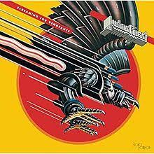
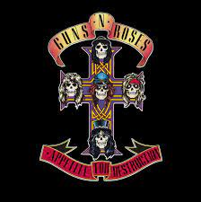
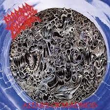
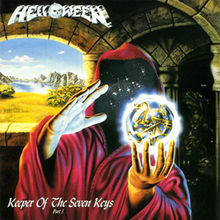
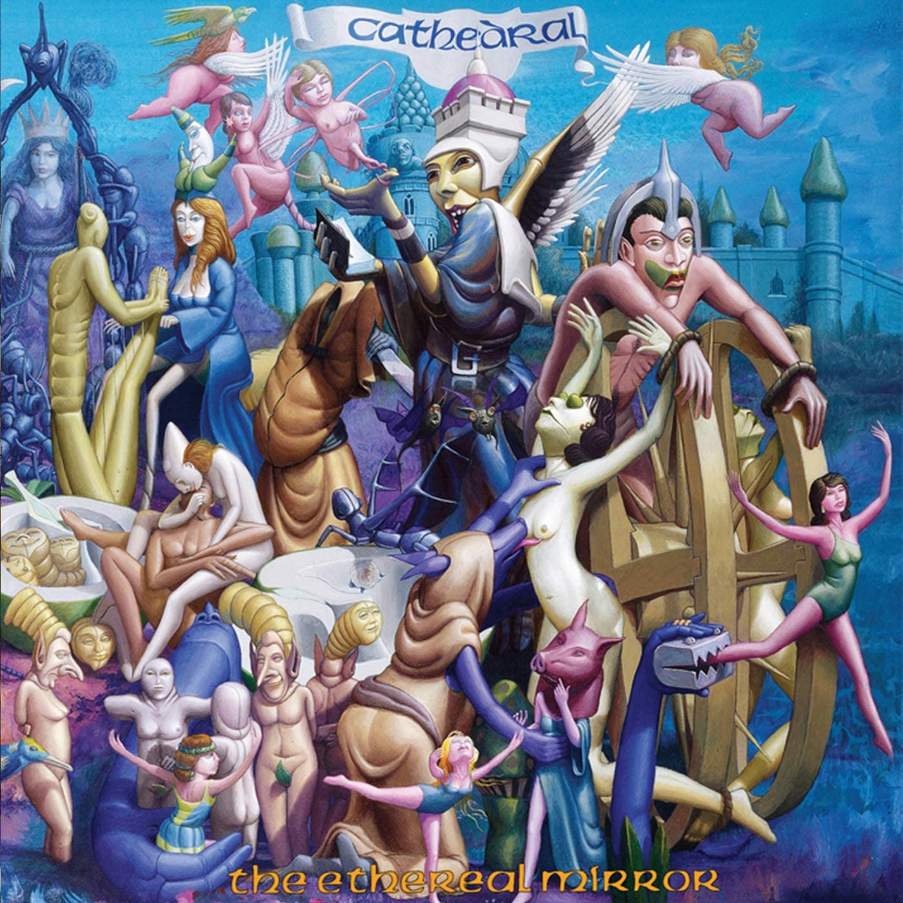
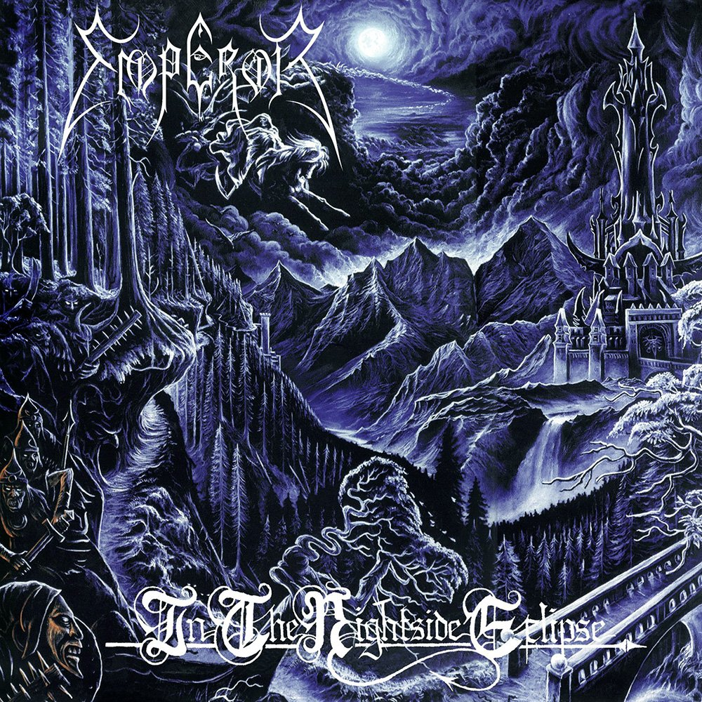
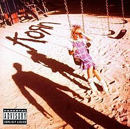
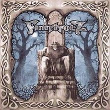
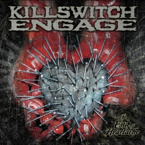
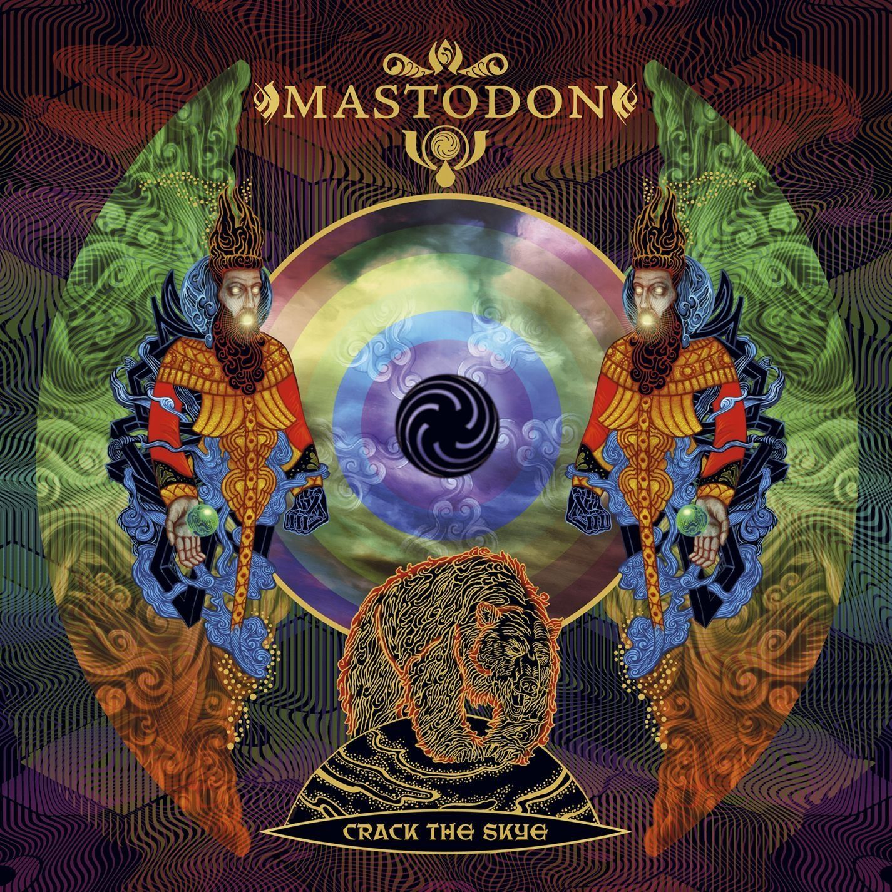

Heavy Metal has a rich and varied history with many different styles and subgenres.
This can be confusing for those who are new to this type of music and don't understand what all the terms mean.
So let's look at each subgenre in turn and explain what they are and the main bands in each style.
Heavy Metal

The original form of the music. Created in the early 70s by Black Sabbath, Deep Purple and others
then honed into a fully distinct style by Judas Priest, Iron Maiden, Motorhead and the New Wave of British Heavy Metal (NWOBHM),
heavy metal is different from the rock music it evolved from because it deals with weightier themes,
whether mythical or based on the tragedies of real life (such as war) and the music is harder and darker.
Iron Maiden 'The Trooper'
Hard Rock

An umbrella term for artists who were strongly associated with heavy metal culture in the 70s and 80s but are not really heavy metal, properly speaking.
These bands, while loud and amplified, sometimes shocking and provocative, nevertheless deal with lighter themes (sex, drugs and rock 'n' roll)
while musically being either too blues based or too melodic and pop influenced to really count as metal.
They are more a kind of loud (hard) rock music. Led Zeppelin were an influence on metal but are in fact hard rock.
Other hard rock bands are Alice Cooper, Kiss, Aerosmith, AC/DC, Van Halen, Def Leppard, Motley Crue and Guns 'n' Roses
Guns 'n' Roses 'Welcome to the Jungle'
Thrash Metal
A reaction against the LA hard rock scene of Glam Metal (such as Motley Crue),
Thrash Metal emphasised and exagerrated the speed and aggression of metal.
The music was fast with a defining palm muted guitar sound that sounds particularly brutal compared to more melodic styles of metal.
The subject matter was often political or about war and the movement (at least in the US) was definitely a reaction to 80s right wing politics.
The first Satanic metal appeared at this time, itself a reaction to the anti-metal criticisms of right wing Christians.
Important thrash metal bands are Metallica, Slayer, Megadeth, Anthrax, Exodus, Kreator, Testament, Overkill and Sepultura.
Metallica 'Battery'
Death Metal

Death Metal evolved from Thrash Metal and took the music in an even darker and more aggressive direction.
The music is often fast but in the early days had distinctive tempo changes and included slow, heavy passages alongside the fast passages.
The low death growl style of vocals is a particularly distinctive element and the lyrics are often based in gore or horror
but sometimes deal with more philosophical or socially conscious subject matters. There are different types of death metal too,
from the brutal excesses of grindcore, through the musical intricacies of technical death metal, to the more palatable and anthemic melodic death metal.
Important death metal bands are Death, Obituary, Morbid Angel, Carcass, Napalm Death, Cannibal Corpse, Immolation, Cattle Decapitation, Suffocation, Nile, At the Gates and Arch Enemy.
Death 'Pull the Plug'
Power Metal

Not all metal is dark and foreboding however. In the late 80s a sound evolved that took the melody of heavy metal,
and the speed of thrash metal and created a light, upbeat, empowering form of metal known as Power Metal.
The lyrics often deal with fantasy themes and the music can veer towards cheesy at times.
Important power metal bands are Helloween, Blind Guardian, Gamma Ray, Iced Earth, Stratovarius, HammerFall and Dragonforce.
Helloween 'Future World'
Doom Metal

While Thrash Metal and Death Metal sped things up, some bands chose to slow things down while retaining the heaviness.
This was the style of Doom Metal. It wasn't very popular at first when Pentagram, Trouble and Saint Vitus took metal back to a slow, Black Sabbath influenced style in the mid 80s.
But Candlemass and Cathedral brought Doom Metal to the wider metal community's attention in the late 80s and early 90s.
It soon split up into various sub styles. The Death Doom of Paradise Lost and My Dying Bride brought in death metal vocals and a gothic melancholy.
Stoner Doom mixes the doom with elements of psychedelic rock. Important Stoner bands are Kyuss, Sleep and Electric Wizard.
Sludge Metal meanwhile mixes Doom with the angst and anguish of hardcore punk with bands like Crowbar and Eyehategod.
Other styles of Doom Metal slow things down to the point of the avant-garde, such as the Drone Metal of Sunn O))) and Funeral Doom bands such as Evoken.
Cathedral 'Serpent Eve'
Black Metal

Black Metal is similar to Death Metal but there is more emphasis on dark atmosphere than on speed and brutality.
The lyrical themes are Satanic or Pagan, often evoking the harsh, icy wilderness of the Scandinavian countryside.
Unlike the polished production and intricate musicianship of the Death Metal scene, Black Metal bands prefer a simpler sound and a raw, unpolished production.
Several bands in the 1980s inspired the Black Metal scene, even though they were more like obscure, especially underground and satanic thrash bands.
This is the so-called First Wave of Black Metal with the bands Venom, Mercyful Fate, Celtic Frost and Bathory.
Black Metal began in earnest in the mid 90s however with Norwegian bands such as Mayhem, Burzum, Immortal, Darkthrone, Satyricon, Gorgoroth and Emperor.
This scene was notorious in the mid 90s for a spate of church burnings and the tragic murder of Mayhem's Euronymous at the hands of Burzum's Varg Vikernes.
But the appeal of the dark, primal, atmospheric sound of black metal music has long since eclipsed the notoriety of the events that brought it into the public consciousness.
There are now Black Metal bands and scenes all over the world and there are also important offshoot styles such as Blackened Death Metal, Symphonic Black Metal and Blackgaze.
Emperor 'Beyond the Great Vast Forest'
Alternative Metal

In the late 80s and early 90s various bands started mixing metal with elements from other types of music.
Funk Metal was a prominent scene at the time with the Red Hot Chilli Peppers and Living Colour being two particularly well known examples.
But there were other bands that mixed things up, such as Rage Against the Machine with their Rap Metal hybrid, and Faith No More with their exciting mixture of all kinds of styles.
Helmet were another early Alternative Metal band. Alongside this early 90s explosion of Alternative Metal was Groove Metal, which took Thrash and stripped it down to a more simple and groove based style. Important groove metal bands are Pantera and Machine Head,
but major thrash bands such as Metallica, Megadeth and Sepultura were also altering their sound to a more simple, alternative metal style at this time.
Grunge was also a major musical phenomenon at this time, and its huge popularity was probably a major factor in the rise of Alternative Metal.
Is Grunge metal? Well, sometimes but not always. Much of it is more correctly placed within Alternative Rock and is more influenced
by punk than by metal (this is the case for Nirvana, Pearl Jam and Mudhoney). Soundgarden and Alice in Chains offer a more metallic sound however,
having a definite Black Sabbath influenced style.
Eventually Alternative Metal and Groove Metal sort of distilled down into a specific style known as Nu-Metal, which was immensely popular in the early 00s.
Metal purists are fond of criticising Nu-Metal as a fake abomination and its fans as "posers". However the bands Korn and Slipknot do garner some respect in metal circles,
and irrespective of how metal you think they are, Linkin Park's 'Hybrid Theory' is definitely a very effective album.
Another style in the wider category of Alternative Metal is Industrial Metal. This was very popular in the 90s and it mixes stripped down thrash metal riffs
with elements of electronic music, specifically influenced by EBM and Industrial music (hence the name). Enormously popular bands such as Nine Inch Nails, Ministry, Rammstein and Marilyn Manson are what immediately come to mind,
but more underground acts such as Godflesh and Fear Factory are also very important.
Korn 'Falling Away From Me'
Folk Metal

Metal mixed with folk is of course called Folk Metal. This was a major force in metal music during the 00s and it has various sub styles such as Celtic Folk Metal, Medieval Folk Metal, Viking Metal, Pirate Metal and so on.
2 bands started it all. Skyclad are perhaps the most obvious. In the early 90s they got quite a cult following with their thrash guitars meet folky violin sound
and their pagan lyrics sung by eccentric frontman Martin Walkier. Meanwhile Bathory, after finishing being a pioneering band in Black Metal then proceeded to create Viking Metal
on their early 90s albums Hammerheart and Twilight of the Gods. There had been metal songs about Vikings before of course,
but Viking Metal also has its own sound, and slots vaguely into Folk Metal as a whole. Bathory started this.
As the 90s continued other bands continued to create Folk Metal, and the varieties known as Celtic Metal and Medieval Metal emerged.
Then in the 00s the previously niche style of Folk Metal became a major force in the metal community thanks to a large number of
bands from Finland ushering in a new era of Folk Metal. Ensiferum, Korpiklaani and Finntroll are just three especially prominent examples of this, but there has
been an explosion of bands, scenes and sub styles of Folk Metal all through the 00s and beyond.
Ensiferum 'Token of Time'
Metalcore

The influence of punk on metal goes back to Motorhead and the New Wave of British Heavy Metal. Punk and metal
have historically had a mutual tendency to influence each other. However alongside the already punk influenced sound of Thrash Metal
in the mid 80s, there emerged a style called Crossover Thrash that specifically merged punk with metal. Suicidal Tendencies
and DRI are perhaps two of the most well known Crossover bands. Through the 90s the merging of punk and metal went
down its own evolutionary path that eventually culminated in the Metalcore style that became immensely popular in the 00s.
Killswitch Engage in particular became very succesful, as did ShadowsFall, Trivium and Avenged Sevenfold to name a few.
Around this time Lamb of God released their very influential album "Ashes of the Wake". Lamb of God tend to get defined as Groove Metal
but this influx of hip and (unlike Nu-metal) credible new metal bands in the mid 00s, all of which were from the USA,
gave rise to the term NWOAHM (New Wave of American Heavy Metal). In the late 00s Metalcore led to Deathcore, a death metal influenced form of Metalcore.
What defines Metalcore as distinct from, say, Thrash Metal or Death Metal? Well it's the breakdowns that slow everything down to
a pummelling tempo in the middle of the song, the songs also tend to be more simple and orientated on groove rather than
long guitar solos. Metalcore bands like Killswitch Engage also apply a mix of harsh vocals and clean vocals.
Killswitch Engagee 'Break the Silence'
Progressive Metal

Perhaps the biggest success story of recent years in terms of metal subgenres has been the huge rise of Progressive Metal.
Progressive Metal was arguably created by Rush in the 70s, but it was Queensryche in the 80s who really began a new subgenre.
Voivod, despite their thrash roots, were being progressive and avant-garde in the late 80s and beyond. Finally Dream
Theater took the progressive rock influence one step further and really cemented the Progressive Metal subgenre as a definite
style of its own.
Obviously Progressive Metal is Metal that adopts the musical approach of Progressive Rock (and sometimes is influenced
by the sound of Progressive Rock too). It is a definite scene within Metal but it is wide and varied in terms of actual sound.
While Queensryche took a traditional metal sound and used it to create emotionally charged concept albums, Voivod
took their thrash roots into a very strange and avant-garde direction, and Dream Theater created album after album of
Progressive Rock influenced masterpieces with heavy metal elements, a number of newer bands have used the progressive approach on
a wide variety of metal subgenres. Tool are to some extent rooted in Alternative Metal but they are definitely a major band
in Progressive Metal. Opeth are Progressive Death Metal. Gojira also bring a heavy, thrash metal influenced style to their
undoubtedly Progressive style of metal. Mastodon meanwhile have a Sludge Metal sound to their guitars while also producing
Progressive Metal classics such as Crack the Skye.
There are other styles related to Progressive Metal, such as the hypnotic style known as Djent pioneered by the excellent band
Meshuggah, and Mathcore, which adopts unusual time signatures and was popularised by Dillinger Escape Plan.
Progressive Metal is now mainstream in metal. Through the 80s and 90s it was very niche, but in the 00s and 2010s it
has (alongside a revival of Thrash Metal) become the most important movement within heavy metal over the last 10 or 15 years.
Gojira 'Magma'
That's it for the various styles and subgenres of metal music. Hopefully this has clarified the confusing web
of styles and terminology used when discussing metal music. Metal fans are passionate about the music we love and
so these labels really do help us to find the sounds and styles we prefer within what is a vast and varied musical
and subcultural landscape. It can be confusing for outsiders though, so hopefully I have helped to illuminate this topic to anyone
interested in learning more.